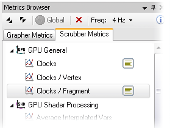

The Metrics Browser lists the Grapher (real-time) performance metrics and Scrubber (per-rendercall) performance metrics supported by the connected device.

Basic usage:
• Selecting a metric will display information about it in the documentation panel, below the metrics listing.
• To add a real-time metric to a Grapher, use the left mouse button to drag a metric from the Grapher Metrics tab, and drop it on a Grapher.
- If the metric does not begin plotting immediately, make sure an application is currently connected, and that the Grapher has not been paused.
• To add a per-rendercall metric to a Scrubber v2.x, use the left mouse button to drag a metric from the Scrubber Metrics tab, and drop it on a Scrubber v2.x.
- To collect data for the newly added metric, capture a new frame from the device.
- Enabled metrics will be measured for each glDraw call; explore the data using the call trace list. Also see the tutorial on capturing per-rendercall metrics.
• To remove a metric from either a Grapher or Scrubber, click on the metric's status icon [, ] in the browser, then select the Grapher or Scrubber you wish to detach in the menu that appears.
- For Grapher metrics, you may also disable a metric by clicking on its label below the graph axes.
Toolbar options:
Expands or collapses all items in the texture list.
Toggles global monitoring for real-time metrics.
• When off, real-time metrics report activity only for the connected GLES context or thread. Any work done by other processes/applications, or by other threads within your application, are not reflected in the values plotted by Grapher documents.
• When on, real-time metrics report total GPU activity across all processes/applications.
• Note that some metrics do not support this setting - any metric that does not support global monitoring will clearly state the limitation in the documentation panel.
Stops all metrics.
Selects the report frequency of real-time metrics.